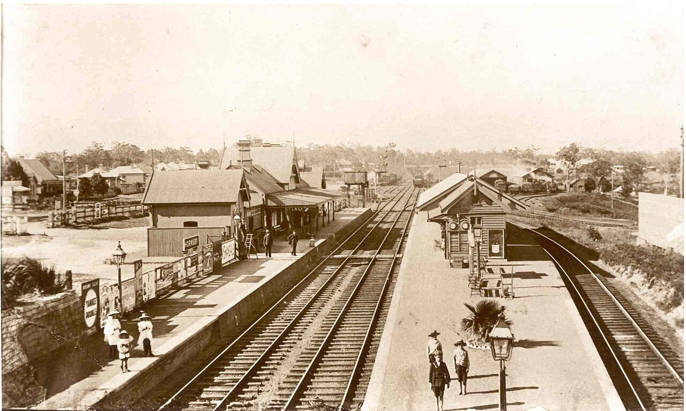

Local history
Hornsby
A railway junction from 1886 — where the Northern line met the new North Shore line
Audience: public
Local history
A railway junction from 1886 — where the Northern line met the new North Shore line
Audience: public